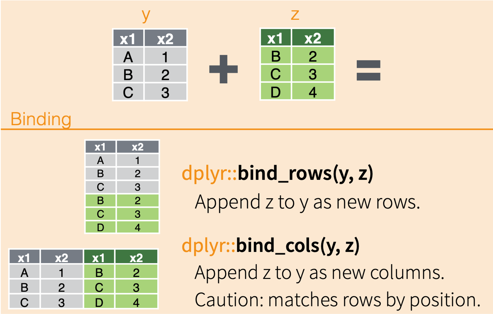

# load packages
library(dplyr)
Attaching package: 'dplyr'The following objects are masked from 'package:stats':
filter, lagThe following objects are masked from 'package:base':
intersect, setdiff, setequal, unionlibrary(readr)In today’s lesson, we will be talking about how to bring multiple data frames together into one data frame.
Often times, we have a lot of data for one project that are related but storing all of the data in one file would add unnecessary redundancy (e.g., data in certain rows would need to be repeated too often). Other times, data has been collected separately and needs to be combined before analysis.
Being able to join together data from related tables is a key skill in data science, and for working with larger data structures (databases with their own languages, like SQL).
We are going to use two different datasets to explore binds and joins. For binds, we are going to continue to use the Portal data with which we have become quite familiar. For joins, we will use rodent capture data from Organ Pipe National Monument; you’ll use the Portal data for joins in your assignment.
Let’s go ahead and load our usual packages.
# load packages
library(dplyr)
Attaching package: 'dplyr'The following objects are masked from 'package:stats':
filter, lagThe following objects are masked from 'package:base':
intersect, setdiff, setequal, unionlibrary(readr)To start, let’s read in the surveys dataframe from the Portal dataset.
surveys <- read_csv("surveys.csv")Rows: 35549 Columns: 9
── Column specification ────────────────────────────────────────────────────────
Delimiter: ","
chr (2): species_id, sex
dbl (7): record_id, month, day, year, plot_id, hindfoot_length, weight
ℹ Use `spec()` to retrieve the full column specification for this data.
ℹ Specify the column types or set `show_col_types = FALSE` to quiet this message.We have 2 main methods of combining datasets: binds and joins. They work in different ways.
One way we can combine data sets in through binds. Binds act similarly to gluing datasets together instead of sorting rows to match up based on unique identifiers (“keys).

For bind_rows():
we are stacking datasets on top of each other vertically
columns are matched by name (not position); a column missing in one dataset will be filled with NAs
often used when you have multiple datasets with the same structure
For bind_col():
we are putting datasets beside each other horizontally
rows are matched by position, not by unique values
datasets must have the same number of rows
These can be very useful, but you need to be careful using them, especially bind_cols, as the function will automatically assume that the rows are in the correct positions.
Let’s work with an example.
The surveys data only goes through 2002, but we have a lot more data from the site! Let’s pull down all of the rodent data since 2002 from the portalr package, a package the Weecology lab made to make working with the (actual) Portal data a bit easier. Run the following code chunk.
# load our package
library(portalr)
# load the new rodent data and do a little cleaning
# don't worry if you don't know what every bit of this code is doing,
# though some of it should look familiar :)
new_rodents <- summarize_individual_rodents() %>%
select(month, day, year, plot_id = plot, species_id = species,
sex, hindfoot_length = hfl, weight = wgt) %>%
filter(year > 2002) %>%
mutate(record_id = seq(nrow(surveys) + 1,
nrow(surveys) + nrow(.))) %>%
tibble::as_tibble()Warning in load_datafile(file.path("Rodents", "Portal_rodent.csv"), na.strings = "", : Proceeding to download data into specified path~Downloading version `6.62.0` of the data...Loading in data version 6.62.0new_rodents# A tibble: 41,704 × 9
month day year plot_id species_id sex hindfoot_length weight record_id
<int> <int> <int> <int> <fct> <chr> <int> <dbl> <int>
1 2 1 2003 1 PB M 27 52 35550
2 2 1 2003 1 PB M 26 32 35551
3 2 1 2003 1 DO M 34 47 35552
4 2 1 2003 1 PP M 22 17 35553
5 2 1 2003 1 PP F 22 19 35554
6 2 1 2003 1 DO F 36 53 35555
7 2 1 2003 1 OT M 20 27 35556
8 2 1 2003 1 DO F 35 59 35557
9 2 1 2003 1 DO F 36 NA 35558
10 2 1 2003 1 NA F 31 194 35559
# ℹ 41,694 more rowsWhen we look at the new_rodents data frame, we can see the same columns as in surveys, though the record_id column is at the end.
We want to bind these two data frames together so that we have all of the rodent data in one data frame. To do so, we would use bind_rows() because we want to “vertically” stack these data frames together since they share the same columns.
The arguments for both bind_rows() and bind_cols() are the names of the data frames you want to bind together.
all_rodents <- bind_rows(surveys, new_rodents)
head(all_rodents)# A tibble: 6 × 9
record_id month day year plot_id species_id sex hindfoot_length weight
<dbl> <dbl> <dbl> <dbl> <dbl> <chr> <chr> <dbl> <dbl>
1 1 7 16 1977 2 NL M 32 NA
2 2 7 16 1977 3 NL M 33 NA
3 3 7 16 1977 2 DM F 37 NA
4 4 7 16 1977 7 DM M 36 NA
5 5 7 16 1977 3 DM M 35 NA
6 6 7 16 1977 1 PF M 14 NAtail(all_rodents)# A tibble: 6 × 9
record_id month day year plot_id species_id sex hindfoot_length weight
<dbl> <dbl> <dbl> <dbl> <dbl> <chr> <chr> <dbl> <dbl>
1 77248 12 8 2024 14 DM M 35 36
2 77249 12 8 2024 14 DM F 35 40
3 77250 12 8 2024 17 DM F 35 36
4 77251 12 8 2024 17 DM F 37 43
5 77252 12 8 2024 17 DM F 36 50
6 77253 12 8 2024 16 DM F 32 36Notice that the data has been successfully rearranged to have the columns match up. This will only happen if the columns have the exact same names.
Try your hand at Question 6 on the assignment.
When we talked about data structure, one of the things we discussed was splitting data into multiple tables. This lets us avoid unnecessary redundant information, like listing the full taxonomy for every individual of a species. This, in turn, makes storage more efficient and allows us to make changes in one place, not hundreds of places.
Our goal is for each table to contain a single kind of information.
Let’s take a look at this using the rodent capture data from Organ Pipe National Monument.
First, we need to read in all four data tables.
rodent_detail <- read_csv("ORPI_RodentDetail.csv")Rows: 29880 Columns: 5
── Column specification ────────────────────────────────────────────────────────
Delimiter: ","
dbl (5): RecordID, RodentSurveyID, RodentSpeciesID, Weight, Recapture
ℹ Use `spec()` to retrieve the full column specification for this data.
ℹ Specify the column types or set `show_col_types = FALSE` to quiet this message.rodent_survey <- read_csv("ORPI_RodentSurvey.csv")Rows: 704 Columns: 6
── Column specification ────────────────────────────────────────────────────────
Delimiter: ","
chr (2): StartDate, EndDate
dbl (4): SurveyID, SiteID, Quadrat, NumTraps
ℹ Use `spec()` to retrieve the full column specification for this data.
ℹ Specify the column types or set `show_col_types = FALSE` to quiet this message.rodent_species <- read_csv("ORPI_RodentSpecies.csv")Rows: 18 Columns: 4
── Column specification ────────────────────────────────────────────────────────
Delimiter: ","
chr (3): SpeciesCode, GenusSpecies, Family
dbl (1): RodentSpeciesID
ℹ Use `spec()` to retrieve the full column specification for this data.
ℹ Specify the column types or set `show_col_types = FALSE` to quiet this message.rodent_site <- read_csv("ORPI_Site.csv")Rows: 46 Columns: 6
── Column specification ────────────────────────────────────────────────────────
Delimiter: ","
chr (3): Site, Name, CoreStatus
dbl (3): SiteCode, Easting, Northing
ℹ Use `spec()` to retrieve the full column specification for this data.
ℹ Specify the column types or set `show_col_types = FALSE` to quiet this message.In these four datasets, we have the following:
rodent_detail: data about each individual rodent caughtrodent_survey: data about each survey occasionrodent_species: data about each rodent speciesThis way, if a species name changes (for example), we only need to change it in the species table rather than tens of thousands of times.
When we need to combine the datasets together to use data from multiple data frames, we use a join function.
Take a few minutes to examine these data tables. Each data frame shares at least one column with another data frame (though the column names may or may not match…).
Joins are arguably the more complicated of the two types of ways to combine data, but they are, therefore, the more flexible and useful of the two.
The magic comes because they merge datasets by matching up columns of data based on unique identifiers (“keys”) in each row of data.
In the following diagram, the two example data frames have the column x1 in common, and each of the values in x1 are unique (no repeats in the same data frame). When combining the datasets, all of the columns are added, and their rows are matched up to their respective values in the x1 column.
This can happen a couple ways, depending on which data frame is the reference and how much data you want to retain.
Depending on the type of join you use, you will keep all rows from table (left_join and right_join), both tables (full_join), or only rows with matches (inner_join).

You can find another way to visualize what happens during different type of joins through GIFs from tidyexplain.
To enable us to make these connections, the tables need one (or more) columns that link them together; these are the “keys.”
Inner joins keep only rows that have a match in both data frames.
Let’s join the rodent_detail and rodent_species tables together using an “inner join.”
To do this, we use the inner_join function from dplyr. It takes three arguments:
join_by() function,inner <- inner_join(rodent_detail, rodent_species, join_by(RodentSpeciesID))
inner# A tibble: 29,810 × 8
RecordID RodentSurveyID RodentSpeciesID Weight Recapture SpeciesCode
<dbl> <dbl> <dbl> <dbl> <dbl> <chr>
1 1 22 112 NA 1 CHPE
2 2 22 119 NA 1 PEAM
3 3 22 115 30.6 0 DIME
4 4 22 115 32.2 0 DIME
5 5 22 115 40 0 DIME
6 6 22 112 14.2 0 CHPE
7 8 22 115 43.8 0 DIME
8 9 22 115 45.5 0 DIME
9 10 22 115 41.8 0 DIME
10 11 22 119 11 0 PEAM
# ℹ 29,800 more rows
# ℹ 2 more variables: GenusSpecies <chr>, Family <chr>Looking at the combined table, we can see that on every row in rodent_detail with a particular value for RodentSpeciesID column, the join has added the matching values from rodent_species, including the species code, scientific name, and family.
One way to think about this join is that it adds the relevant information in the rodent_species table to the rodent_details table.
Let’s go back up and look at the visualization of the inner join. When we use the inner_join function to merge together table a and b, the result only has rows for which the common column (x1) have the same values in each table (A and B).
Translating this to the rodent data, that means that we dropped any rows for which there is no matching RodentSpeciesID.
RecordID 7 in the rodent_detail table has a missing species ID. If you look in the inner table, you’ll notice that in the RecordID column, number 7 is missing.
The other join functions might have handled this differently, based on how they work.
For example, left joins keep all rows in the first, or left, table. If we wanted to keep rows with missing species IDs in the rodent_detail data frame, we could use left_join().
left <- left_join(rodent_detail, rodent_species, join_by(RodentSpeciesID))
left# A tibble: 29,880 × 8
RecordID RodentSurveyID RodentSpeciesID Weight Recapture SpeciesCode
<dbl> <dbl> <dbl> <dbl> <dbl> <chr>
1 1 22 112 NA 1 CHPE
2 2 22 119 NA 1 PEAM
3 3 22 115 30.6 0 DIME
4 4 22 115 32.2 0 DIME
5 5 22 115 40 0 DIME
6 6 22 112 14.2 0 CHPE
7 7 22 NA NA 1 <NA>
8 8 22 115 43.8 0 DIME
9 9 22 115 45.5 0 DIME
10 10 22 115 41.8 0 DIME
# ℹ 29,870 more rows
# ℹ 2 more variables: GenusSpecies <chr>, Family <chr>Because there are no values in the rodent_species table that correspond to a missingRodentSpeciesID, the columns from that table are filled with NA values in the rows with no match.
There are also right joins, which keep all rows in the second (or right) table, and full joins, which keep all rows from both tables, even there isn’t a matching row.
To demonstrate a full join, we are going to use the other two tables: rodent_survey and rodent_site.
Our first step is to identify the uniting column, or “key.” In this case, the columns do not share the same name, but they do share the same data. We can successfully join them by setting the column names equal to each other in the join_by() function with ==.
# to join tables when the key column(s) have different names:
# set the columns equal to each other in the join_by() function with ==
# put them in the same order as the data frames are listed in the function
full <- full_join(rodent_survey, rodent_site, join_by(SiteID == SiteCode))
full# A tibble: 732 × 11
SurveyID SiteID StartDate EndDate Quadrat NumTraps Site Name CoreStatus
<dbl> <dbl> <chr> <chr> <dbl> <dbl> <chr> <chr> <chr>
1 1 1 7/9/91 7/10/91 1 49 AGUA Aguajita… Core 1
2 2 1 7/9/91 7/10/91 2 49 AGUA Aguajita… Core 1
3 3 10 7/19/91 7/20/91 1 49 ALAM Alamo Ca… Core 1
4 4 10 7/19/91 7/20/91 2 49 ALAM Alamo Ca… Core 1
5 5 6 7/2/91 7/3/91 1 49 DOLO Dos Lomi… Core 1
6 6 6 7/2/91 7/3/91 2 49 DOLO Dos Lomi… Core 1
7 7 14 7/11/91 7/12/91 1 49 EARM East Arm… Core 1
8 8 14 7/11/91 7/12/91 2 49 EARM East Arm… Core 1
9 9 16 7/16/91 7/17/91 1 49 GROW Growler … Core 1
10 10 16 7/16/91 7/17/91 2 49 GROW Growler … Core 1
# ℹ 722 more rows
# ℹ 2 more variables: Easting <dbl>, Northing <dbl># older notation for combining tables with columns with different names
# full_join(rodent_survey, rodent_site, by = c("SiteID" = "SiteCode"))Note: for our assignment, we’ll focus on using inner joins.
Sometimes, we need to combine more than two tables.
To join more than two tables, we start by joining two tables, then join the resulting table to a third table, and so on.
Let’s combine all four tables from Organ Pipe!
all_ORPI_data <- rodent_detail %>%
inner_join(rodent_species, join_by(RodentSpeciesID)) %>%
inner_join(rodent_survey, join_by(RodentSurveyID == SurveyID)) %>%
inner_join(rodent_site, join_by(SiteID == SiteCode))If it helps you to keep track of which data tables are being joined when, you can also use the placeholder for your chosen pipe (. for %>%; x = _ for |>).
all_ORPI_data <- rodent_detail %>%
inner_join(., rodent_species, join_by(RodentSpeciesID)) %>%
inner_join(., rodent_survey, join_by(RodentSurveyID == SurveyID)) %>%
inner_join(., rodent_site, join_by(SiteID == SiteCode))
# the placeholder for the native pipe has to be used in a named argument
# the names of the arguments for the two data frames in a join are `x` and `y`
all_ORPI_data <- rodent_detail |>
inner_join(x = _, rodent_species, join_by(RodentSpeciesID)) |>
inner_join(x = _, rodent_survey, join_by(RodentSurveyID == SurveyID)) |>
inner_join(x = _, rodent_site, join_by(SiteID == SiteCode))You should be able to complete Questions 4, 5, and 7